geom_violin(mapping = NULL, data = NULL, stat = "ydensity", position = "dodge", trim = TRUE, scale = "area", show.legend = NA, inherit.aes = TRUE, ...)stat_ydensity(mapping = NULL, data = NULL, geom = "violin", position = "dodge", adjust = 1, kernel = "gaussian", trim = TRUE, scale = "area", na.rm = FALSE, show.legend = NA, inherit.aes = TRUE, ...)
aes or
aes_. If specified and inherit.aes = TRUE (the
default), is combined with the default mapping at the top level of the
plot. You only need to supply mapping if there isn't a mapping
defined for the plot.TRUE (default), trim the tails of the violins
to the range of the data. If FALSE, don't trim the tails.NA, the default, includes if any aesthetics are mapped.
FALSE never includes, and TRUE always includes.FALSE, overrides the default aesthetics,
rather than combining with them. This is most useful for helper functions
that define both data and aesthetics and shouldn't inherit behaviour from
the default plot specification, e.g. borders.layer. There are
three types of arguments you can use here:
color = "red" or size = 3.
stat associated with the layer.
geom_violin and stat_ydensity.density for detailsdensity for detailsFALSE (the default), removes missing values with
a warning. If TRUE silently removes missing values.Violin plot.
geom_violin understands the following aesthetics (required aesthetics are in bold):
x
y
alpha
colour
fill
linetype
size
weight
Hintze, J. L., Nelson, R. D. (1998) Violin Plots: A Box Plot-Density Trace Synergism. The American Statistician 52, 181-184.
p <- ggplot(mtcars, aes(factor(cyl), mpg)) p + geom_violin()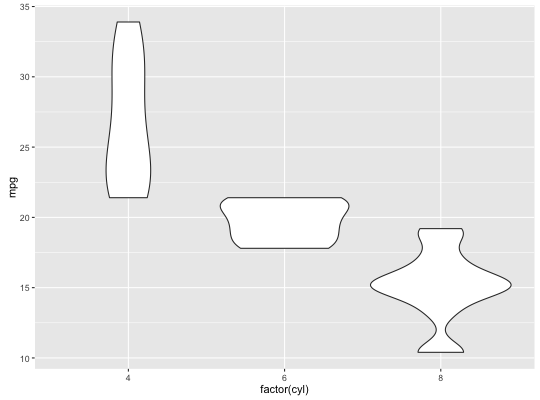
p + geom_violin() + geom_jitter(height = 0)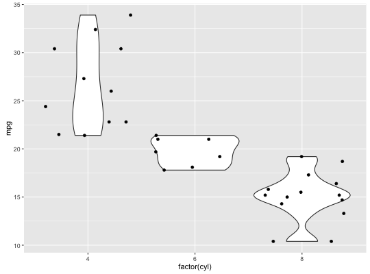
p + geom_violin() + coord_flip()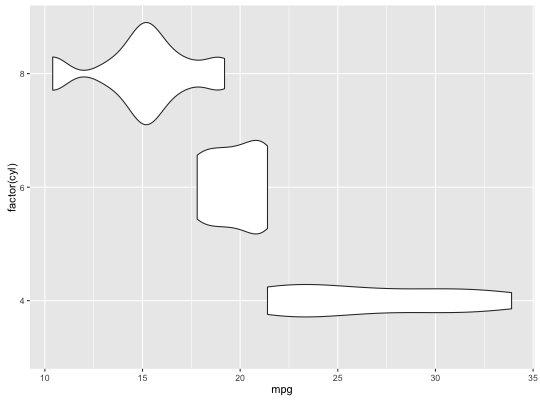
# Scale maximum width proportional to sample size: p + geom_violin(scale = "count")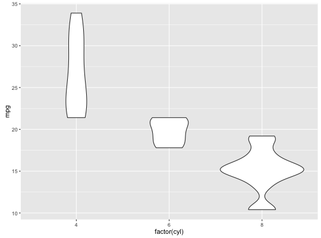
# Scale maximum width to 1 for all violins: p + geom_violin(scale = "width")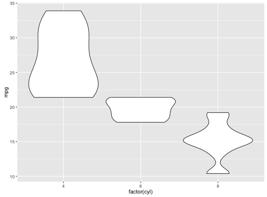
# Default is to trim violins to the range of the data. To disable: p + geom_violin(trim = FALSE)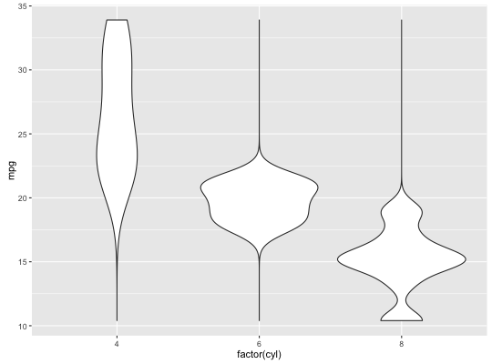
# Use a smaller bandwidth for closer density fit (default is 1). p + geom_violin(adjust = .5)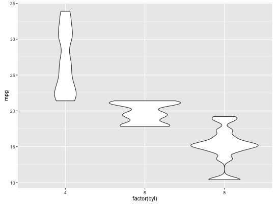
# Add aesthetic mappings # Note that violins are automatically dodged when any aesthetic is # a factor p + geom_violin(aes(fill = cyl))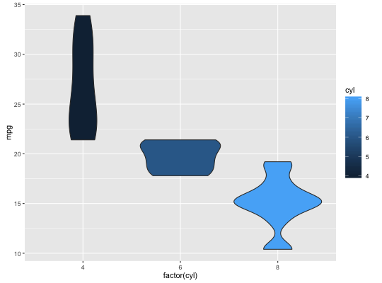
p + geom_violin(aes(fill = factor(cyl)))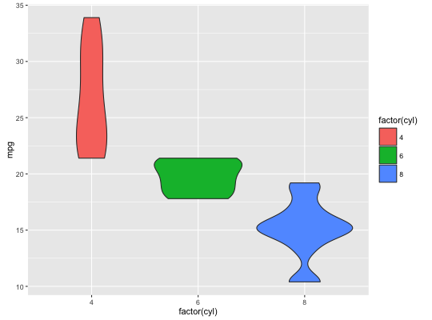
p + geom_violin(aes(fill = factor(vs)))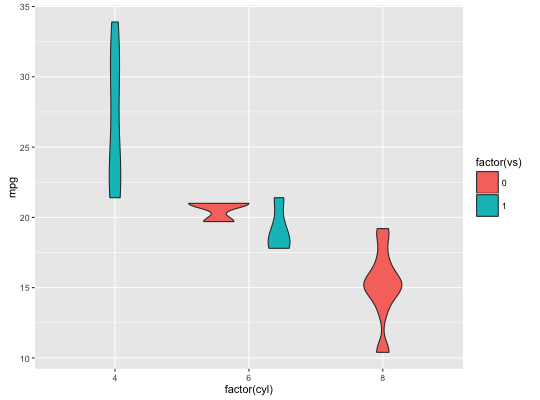
p + geom_violin(aes(fill = factor(am)))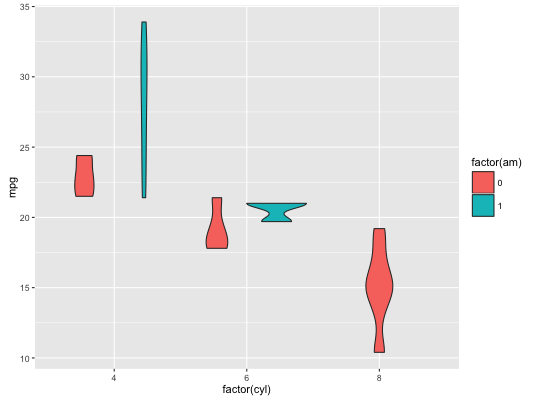
# Set aesthetics to fixed value p + geom_violin(fill = "grey80", colour = "#3366FF")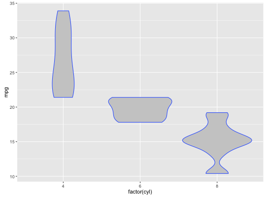
# Scales vs. coordinate transforms ------- if (require("ggplot2movies")) { # Scale transformations occur before the density statistics are computed. # Coordinate transformations occur afterwards. Observe the effect on the # number of outliers. m <- ggplot(movies, aes(y = votes, x = rating, group = cut_width(rating, 0.5))) m + geom_violin() m + geom_violin() + scale_y_log10() m + geom_violin() + coord_trans(y = "log10") m + geom_violin() + scale_y_log10() + coord_trans(y = "log10") # Violin plots with continuous x: # Use the group aesthetic to group observations in violins ggplot(movies, aes(year, budget)) + geom_violin() ggplot(movies, aes(year, budget)) + geom_violin(aes(group = cut_width(year, 10)), scale = "width") }Loading required package: ggplot2movies Warning message: there is no package called ‘ggplot2movies’